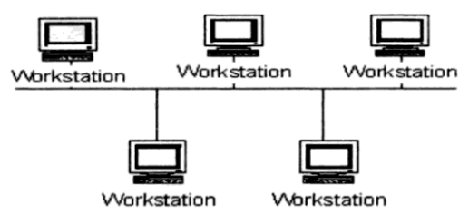
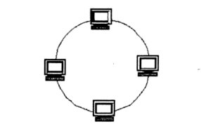
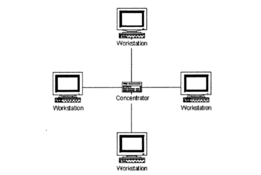
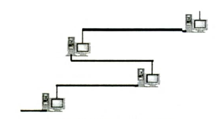
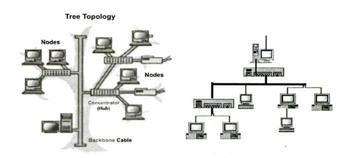
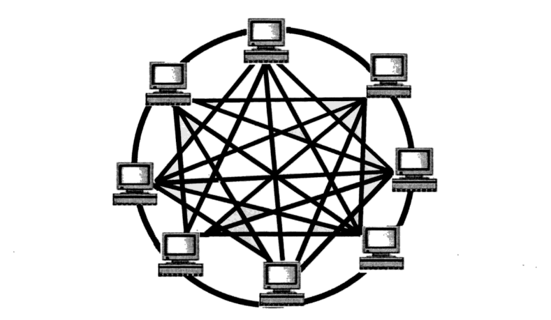

Topologi Jaringan
| Nama | : | Ilma Aulia |
| NIM | : | 20833002 |
| Kelas | : | B |
| Dosen Pengampu | : | Aceng Ahmad Rodian Susila, M.Pd. |
Pengertian Topologi Jaringan
Menurut Syafrizal (2020), topologi jaringan atau arsitektur jaringan adalah gambaran perencanaan hubungan antarkomputer dalam Local Area Netowrk yang umumnya menggunakan kabel (sebagai media transmisi), dengan konektor, ethernet card, dan perangkat pendukung lainnya.
Menurut Fandy (2022), Topologi jaringan komputer merupakan teknologi yang mempelajari suatu teknik untuk menghubungkan komputer dengan komputer lainnya, kemudian membentuk sebuah jaringan.
Topologi jaringan adalah cara atau bentuk yang digunakan untuk menghubungkan dan mengatur komputer dan perangkat jaringan di dalam sebuah jaringan.
Jenis-jenis Topologi Jaringan
Topologi jaringan terbagi menjadi enam karakter utama, yaitu topologi jaringan bus, topologi jaringan star, topologi jaringan ring, topologi jaringan tree, topologi jaringan mesh, dan topologi jaringan linier.
Sebelum mempelajari lebih dalam mengenai keenam topologi tersebut, yuk simak terlebih dahulu video berikut ini.
Topologi Bus
Topologi ini merupakan bentangan satu kabel yang kedua ujungnya ditutup, di mana di sepanjang kabel terdapat node-node. Signal dalam kabel dengan topologi ini dilewati satu arah sehingga memungkinkan sebuah collision terjadi.
Kelebihan:
- Murah, karena tidak memakai banyak media. Kabel yang dipakai pun banyak tersedia di pasaran
- Setiap komputer dapat saling berhubungan secara langsung
- Jarak LAN tidak terbatas
- Kecepatan pengirimannya tinggi
- Tidak memerlukan pengendali pusat
- Memiliki kemampuan pengembangan dan keterandalan jaringan yang tinggi
- Jumlah perangkat yang terhubung dapat diubah tanpa menggangu orang lain.
- Kondusif untuk digunakan sebagai jaringan gedung bertingkan
Kekurangan:
- Akan macet jika traffic tinggi
- Operasional jaringan LAN tergantung kepada setiap perangkat
- Memerlukan repeater untuk memperkuat sinyal
Topologi Ring
Topologi jaringan yang berupa lingkaran tertutup yang berisi node-node. Signal mengalir dalam dua arah sehingga dapat menghindarkan terjadinya collision sehingga memungkinkan terjadinya pergerakan data yang sangat cepat.
Topologi ring ini merupakan topologi di mana setiap perangkat dihubungkan sehingga berbentuk lingkaran.
Kelebihan:
- Memiliki kecepatan pengiriman yang tinggi
- Tidak memerlukan host, harga relatif murah
- Dapat melayani berbagai mesin pengirim
- Komunikasi antar terminal mudah
- Waktu yang diperlukan untuk pengaksesan data optimal
Kekurangan:
- Kerusakan pada media pengirim dapat mempengaruhi seluruh jaringan
- Perubahan jumlah perangkan sulit
- Kerusakan salah satu perangkat menyebabkan kelumpuhan jaringan
- Tidak baik untuk pengiriman suara, video dan data
Topologi Star
Topologi star merupakan topologi yang menggunakan banyak kabel, terdapat perangkat pengendali yang berfungsi sebagai pengatur dan pengendali komunikasi data
Kelebihan:
- Mudah dikembangkan
- Andal
- Memiliki keamanan data yang tinggi
- Mudah untuk akses ke jaringan LAN lain
Kekurangan:
- Jaringan lambat jika traffic tinggi
- Jaringan sangat bergantung pada perangkat pengendali
Topologi Linear/Daisy-Chain
Topologi ini merupakan peralihan dari topologi bus dan topologi ring, di mana tiap simpul terhubung langsung ke dua simpul lain melalui segmen kabel, tetapi segmen membentuk saluran, bukan lingkaran utuh. Antar komputer seperti terhubung secara seri.
Kelebihan:
- Instalasi dan pemeliharaannya murah
- Hemat kabel
- Mudah dikembangkan
Kekurangan:
- Kurang andal dan tidak sesuai dengan kemajuan zaman
- Memerlukan repeater untuk jarak jauh
Topologi Tree/Hierarchical
Topologi ini merupakan generalisasi dari topologi bus, media transmisi berupa kabel yang bercabang tanpa loop tertutup. Topologi tree selalu dimulai pada titik yang disebut headend. Satu atau atau beberapa kabel berasal dari headend.
Kelebihan:
- Bersifat terpusat sehingga kontrol manajemen mudah
- Mudah untuk dikembangkan
Kekurangan:
- Memerlukanmekanisme untuk mengidentifikasi perangkat yang ingin dituju
- Memerlukan mekanisme transmisi data untuk menghindari overlapping sinyal jika 2 perangkat mengirim data secara bersamaan
Topologi Mesh/Full Connected
Topologi ini merupakan gabungan dari beberapa jenis topologi yang lain. Biasanya digunakan pada jaringan yang tidak memiliki terlalu banyak node di dalamnya. Hal ini disebabkan oleh setiap perangkat yang dihubungkan dengan perangkat lainnya.
Kelebihan:
- Memiliki respon waktu yang cepat
- Tidak memerlukan protocol tambahan karena tidak ada fungsi switching
Kekurangan:
- Memerlukan biaya yang cukup mahal
Manfaat Topologi Jaringan
Topologi jaringan komputer menjadikan sebuah sistem networking menjadi lebih terstruktur, terancang dan jelas. Berikut merupakan manfaat-manfaat dari perancangan topologi jaringan.
- Arah jalur internet menjadi jelas. Jadi, memudahkan network engineer untuk melakukan konfigurasi.
- Dapat meminimalisir biaya instalasi jaringan karena semua sudah dihitung dengan matang dalam topologi jaringan. Jadi, minim kemungkinan perangkat kelebihan maupun kurang.
- Memudahkan dalam maintenance maupun upgrade di sisi network engineer karena semua telah terstruktur dengan rinci. Pemberian label di setiap kabel juga akan menjadi nilai plus.
- Penggunaan menjadi sangat mudah di sisi user karena semua bisa saling berkomunikasi dengan baik.
Cara Memilih Topologi yang Tepat
Cara yang tepat untuk memilih topologi jaringan yaitu dengan memperhatikan beberapa faktor. Berikut ini merupakan faktor-faktor yang harus diperhatikan dalam memilih topologi jaringan.
- Biaya
- Kecepatan
- Lingkungan
- Konektivitas
- Skalabilitas
Sumber:
Fandy. (2022). Topologi Jaringan Komputer: Pengertian, Manfaat, dan Jenis-Jenisnya. Gramedia Literasi. Tersedia: https://www.gramedia.com/literasi/topologi-jaringan-komputer/. Diakses [20 Februari 2023].
Syafrizal, M. (2020). Pengantar Jaringan Komputer. Yogyakarta: Penerbit Andi.
Sutoyo, R. (2015). Mari Belajar Mengenai Topologi Jaringan. Tersedia: https://www.youtube.com/watch?v=t7Zxx8crCAA. Diakses [20 Februari 2023].